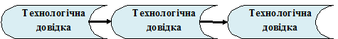

Великий вплив на самопочуття працюючого і на якість роботи справляє:
Корпус необхідно тримати прямо, або трошки нахилити вперед. Не спиратись грудьми до стола.
Ноги слід тримати на підставці. Не рекомендується закладати ногу на ногу, тому що порушується кровообіг.
Руки повинні бути зігнуті в ліктях і відставлені від корпусу не більше ніж на 10 см. При роботі не рекомендується ставити лікті на стіл.
Має становити у середньому 30 см (не менше 25 см і не більше 35 см).
Дуже важливі правильне використання перерв, фізичні вправи до початку роботи і протягом робочого дня. Якщо не дотримуватись цих вимог то настає передчасна втомленість, понижується продуктивність праці, викривляється хребет, розвивається близорукість, з'являється сутулість.
На основі аналізу співвідношення, що якість виробу і продуктивність праці працюючого залежить не тільки від організації робочого місця, а й від правильного підбору інструментів та пристосувань для ручних робіт (Рис.4) здійснюється логічний перехід до інструментів ручних робіт
Проблему інструменти і пристрої для виконання ручних робіт пропонується висвітлювати при допомозі наступного алгоритму:
